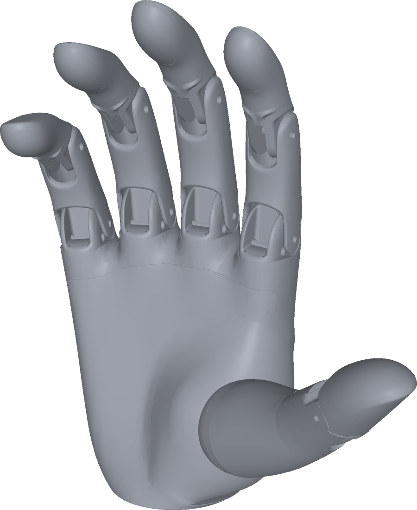

BrainCo Revo2
다관절 손
사양과 전기 연결, BrainCo SDK, Unitree G1 · R1과 AgileX NERO에 단 손을 쓰는 방법, WeGo 원격조작 소프트웨어와 문제 해결을 한 권에 모았습니다.

이 설명서에 대하여
| 로봇 | BrainCo Revo2 다관절 손 (Basic · Pro · Touch, 능동 관절 6개 · 자유도 11) — 단독 사용, Unitree G1 · R1, AgileX NERO에 단 경우 |
| 근거 문서 | BrainCo Revo 2 Dexterous Hand Product Manual V2.1 (2025-09, 18쪽) ·
BrainCo 온라인 문서 Revo 2 (www.brainco-hz.com/docs/revolimb-hand, 2026-11-19 수집: 제품 사양 · 시작하기 · SDK 받기 · Python SDK · 프로토콜 개요 · Modbus 기본 · 직렬 성능 · 데스크톱 도구 · 다운로드 · FAQ) ·
Unitree 문서 G1 · R1 「BrainCo Hand Service」, R1 「Revo 2 Installation」(영상) ·
AgileX NERO USER MANUAL (AgileX NERO 운용 설명서) · AgileX pyAgxArm 문서 docs/effector/revo2 · revo2_touch ·
BrainCo 공개 저장소 unitree-g1-brainco-hand (G1 연동 튜토리얼, 2026-10-27) |
| SDK 대조 | bc-stark-sdk 2.0.2 형 정보(main_mod.pyi) · BrainCo brainco-hand-sdk git 771f211 (2026-05-29) ·
Unitree brainco_hand_service git d71996b (2026-05-11) · AgileX pyAgxArm 1.0.0 git f85f130 (2026-06-01) |
| 실측 자료 | WeGo 시험: R1의 Revo2 두 손 (2026-10-12, 채널 대응 · 방향) · H2의 Revo2 Touch 두 손 (2026-11-10, 펌웨어 1.0.22.U) · WeGo NERO Studio의 Revo2 Touch 구동 코드 (2026-10) |
| 함께 보는 책 | Unitree G1 개발 설명서 · Unitree R1 개발 설명서 · Unitree H2 개발 설명서 · AgileX NERO 운용 설명서 · WeGo Humanoid Studio 사용 가이드 · WeGo NERO Studio 사용 가이드 |
| 판 | 한국어판 · 2026.11.19 |
| 문의 | go.support@wego-robotics.com |
이 책은 BrainCo 설명서를 번역한 것이 아닙니다. BrainCo 자료에서는 사양 · 설정값 · 절차의 사실만 출처를 밝혀 WeGo의 말로 정리했고, 글과 그림은 옮기지 않았습니다. 핀 정의와 손목 도면은 BrainCo 온라인 문서의 다운로드 페이지에, 레지스터 전체는 프로토콜 페이지에 있습니다. 출처끼리 다른 곳은 값을 고치지 않고 참고 상자에 적었고, 확인하지 못한 것은 '확인 필요'로 표시했습니다.
출처 표시: 문서 제조사(BrainCo · Unitree · AgileX) 공식 자료, SDK SDK · 서비스 소스에서 확인, 실측 WeGo가 실제 손으로 확인. 실측값은 WeGo의 시험 장비에서 나온 값이며 손마다 다를 수 있습니다. IP 주소는 Unitree 문서에 적힌 공장 기본값입니다.
© WeGo Robotics. Revo2는 BrainCo의 제품입니다. 표지의 Revo2 이미지는 BrainCo가 공개한 revo2_description(github.com/BrainCoTech/revo2_description, git 92cc697, Apache License 2.0)의
오른손 메시를 MuJoCo로 렌더링한 것이며, BrainCo가 이 책을 보증하는 것은 아닙니다. Unitree는 Unitree Robotics, AgileX · NERO는 AgileX Robotics의 상표입니다.
목차
- 01제품 개요
- 02중요 안전 수칙
- 03전기 연결과 통신
- 04SDK와 제어
- 05Unitree G1 연동
- 06Unitree R1 연동
- 07AgileX NERO 연동
- 08WeGo 소프트웨어로 원격조작
- 09문제 해결
- 부록빠른 참조
제품 개요
Revo2는 BrainCo가 만든 다섯 손가락 다관절 손(이하 '손')입니다. 손 안의 모터 6개가 능동 관절 6개를 움직이고, 손가락 끝마디는 밑마디를 따라 움직여 모두 11자유도입니다. 개발 PC나 로봇과는 RS485 · CAN FD · EtherCAT으로 통신하며, 모델에 따라 쓸 수 있는 통신과 전원 범위가 다릅니다.
모델 문서
Revo2에는 세 모델이 있습니다. 손의 크기 · 관절 · 힘은 같고, 통신 · 전원 · 촉각 센서가 다릅니다. 내 손의 종류는 SDK가 읽는 장치 정보로 확인할 수 있습니다 (아래 참고 상자).
| 항목 | Basic | Pro | Touch |
|---|---|---|---|
| 버전 코드 | XRL · XRR | XEL · XER | XTL · XTR |
| 통신 | RS485 · CAN FD | RS485 · CAN FD · EtherCAT | RS485 · CAN FD · EtherCAT |
| 전원 | DC 12 ~ 28 V | DC 12 ~ 64 V | DC 12 ~ 64 V |
| 대기 전류 (24 V) | 65 mA | 115 mA | 115 mA |
| 무부하 평균 전류 (24 V, 다섯 손가락 굽혔다 펴기) | 350 mA | 390 mA | 390 mA |
| 최대 전류 (24 V) | 4.6 A | 4.65 A | 4.65 A |
| 촉각 센서 | 없음 | 없음 | 손끝 다차원 촉각 (압력 · 마찰 · 힘 방향 · 근접) |
| 제어 | 위치 · 속도 · 전류 피드백 제어, 순응 제어 | 같음 + 촉각 적응 제어 | |
bc-stark-sdk는 Revo2를 Revo2Basic · Revo2Touch · Revo2TouchPressure · Revo2TouchForce3D · Revo2TouchArrayPressure · Revo2VisionTouch로 나눕니다.
제품 설명서도 촉각형을 정전식(손끝마다 6채널, 3차원 힘 · 근접, 0 ~ 25 N, 분해능 0.1 N, 근접 0 ~ 1 cm)과 압저항식(손가락마다 9점)으로 나눠 설명합니다. Pro에 해당하는 이름은 SDK 목록에 따로 없습니다.
내 손이 어느 종류인지는 4장의 auto_detect.py나 get_device_info가 돌려주는 hardware_type으로 확인하십시오.
주요 사양 문서
| 항목 | 값 |
|---|---|
| 자유도 | 11 (능동 관절 6) |
| 무게 | 383 g (손목 제외) |
| 크기 | 길이 160 mm (손바닥 아래 끝 ~ 가운뎃손가락 끝) · 손바닥 최대 폭 78.5 mm · 엄지 길이 92 mm · 손목 높이 13.5 mm · 손목 지름 38 mm |
| 쥐는 힘 · 집는 힘 | 주먹 쥐기 50 N 이상 · 손가락 집기 15 N 이상 |
| 하중 | 20 kg 이상 (설명서는 정하중, 사양 페이지는 최대 가반 하중으로 적음) |
| 펴고 쥐는 시간 | 0.65초 이하 |
| 반복 정밀도 | 0.1° |
| 최대 벌림 | 100 mm (엄지 ~ 검지) |
| 소음 | 50 dB 이하 (50 cm에서) |
| 사용 환경 | −10 ~ 40 °C, 상대 습도 90% 이하 |
| 보호 기능 | 과전류 · 멈춤(스톨) · 고온 · 충돌 보호 (설명서는 과전류 · 과전압 · 고온 · 충격 보호로 적음) |
| 장착 | 손목 둘레의 M3 나사 4개 |
| 펌웨어 갱신 | OTA (데스크톱 도구 · SDK) |
관절과 손가락 순서 문서
엄지는 굽힘(Thumb Flex)과 모음 · 벌림(Thumb Aux, 엄지를 손바닥 쪽으로 돌리는 움직임) 두 관절을 모터로 움직이고, 끝마디 하나가 따라 움직입니다. 나머지 네 손가락은 밑마디 굽힘 하나를 모터로 움직이고 끝마디가 따라 움직입니다. 모든 소프트웨어가 아래 순서로 여섯 값을 주고받지만, 부르는 이름은 저마다 다릅니다 (표 3).
| 번호 | 관절 | 범위 | 기본 최대 속도 | BrainCo SDK | Unitree 서비스 | pyAgxArm |
|---|---|---|---|---|---|---|
| 0 | 엄지 굽힘 | 0 ~ 59° | 145°/s | Thumb | Thumb | thumb_tip |
| 1 | 엄지 보조 (모음 · 벌림) | 0 ~ 90° | 150°/s | ThumbAux | Thumb_aux | thumb_base |
| 2 | 검지 굽힘 | 0 ~ 81° | 130°/s | Index | Index | index_finger |
| 3 | 가운뎃손가락 굽힘 | 0 ~ 81° | 130°/s | Middle | Middle | middle_finger |
| 4 | 약손가락 굽힘 | 0 ~ 81° | 130°/s | Ring | Ring | ring_finger |
| 5 | 새끼손가락 굽힘 | 0 ~ 81° | 130°/s | Pinky | Pinky | pinky_finger |
0°가 편 자세이고 값이 커질수록 쥡니다. 범위와 최대 속도는 SDK로 바꿀 수 있지만 전원을 끄면 기본값으로 돌아갑니다 (4장). 모든 손가락의 기본 최대 전류는 1000 mA입니다.
BrainCo 문서는 0번을 Thumb Tip(FLEX), 1번을 Thumb Base(AUX)로도 부르며, pyAgxArm의 thumb_tip · thumb_base는 이 이름을 따른 것입니다.
손등 표시등과 버튼 문서
| 표시등 | 뜻 |
|---|---|
| 녹색 깜박임 | 켜는 중 (자동 보정 전) |
| 녹색 켜짐 | 정상 (자동 보정 끝) |
| 노란색 깜박임 | 전원 전압이 낮음 |
| 청록색 켜짐 | OTA 갱신 중 |
| 빨간색 켜짐 | 이상 |
| 버튼 조작 | 기능 |
|---|---|
| 짧게 한 번 | 리셋 (자동 보정 다시 하기) |
| 짧게 두 번 | 주먹 쥐기 |
| 5초 길게 | 공장 초기화 |
전원을 넣으면 손은 손가락마다 원점을 찾는 자동 보정을 하며, 이때 모든 손가락이 움직입니다. 보정이 끝나야(녹색 켜짐) 명령을 받습니다. 공장 초기화는 장치 ID와 통신 속도도 기본값으로 되돌립니다 (3장).
WeGo가 공급하는 구성
| 로봇 | 손 연결 | 제어 프로그램 | 이 책 |
|---|---|---|---|
| Unitree G1 | 손마다 RS485 → G1의 USB-485 변환 보드 → PC2 | PC2의 brainco_hand_service (DDS rt/brainco/*) | 5장 |
| Unitree R1 | 손마다 USB-직렬 → PC2 (백팩) | PC2의 brainco_hand_service | 6장 |
| Unitree H2 | RS485 → PC2 | PC2의 brainco_hand_service | 5장 참고 상자, H2 개발 설명서 7장 |
| AgileX NERO | 팔 끝 커넥터 → AgileX 변환 보드 → 팔의 CAN 버스 | pyAgxArm의 손 드라이버 | 7장 |
| 로봇 없이 | RS485-USB · CAN FD-USB 변환기 → 개발 PC | BrainCo SDK · 데스크톱 도구 | 3 · 4장 |
중요 안전 수칙
BrainCo 제품 설명서의 주의 사항, 로봇 제조사 문서의 경고, WeGo가 실제 손을 다루며 확인한 주의를 모았습니다. 손을 움직이기 전에 읽으십시오.
전원을 넣으면 손은 자동 보정을 하며 모든 손가락을 움직입니다. 이때 쥐고 있던 물건을 놓칩니다. 로봇의 손 서비스가 시작될 때도 손가락이 움직여 손을 폅니다 실측. 전원을 넣기 전과 로봇을 켜기 전에 손 안과 주변에 사람의 손가락 · 물건이 없게 하십시오.
손을 다룰 때 문서
- 손은 온도 · 습도를 느끼지 못합니다. 덥거나 습한 곳에 두지 마십시오. 사용 온도는 −10 ~ 40 °C, 습도는 90% 이하입니다.
- 손에 지나친 하중이나 충격을 주지 말고, 손가락 끝을 세게 누르거나 손가락을 억지로 당기지 마십시오.
- 너무 무겁거나 뜨겁거나 날카롭거나 거칠거나 부식성이 있는 물건은 쥐지 마십시오.
- 불꽃 가까이, 인화성 · 폭발성 환경, 고압선 · 대전력 기계 근처처럼 전자기장이 강한 곳에서 쓰지 마십시오.
- 보호 장치 없이 물 · 알코올 · 음료 같은 액체나 먼지에 닿게 하지 마십시오. 닿았다면 바로 전원을 끄고 WeGo 기술 지원에 연락하십시오.
- 손으로 위험한 기계를 조작하지 마십시오.
- 허가 없이 분해하지 마십시오. 보증을 받지 못합니다. BrainCo 제품 설명서는 보증 기간을 구입일부터 1년으로 적습니다.
설치하고 배선할 때 문서
- 전원은 모델의 범위 안에서 넣으십시오: Basic DC 12 ~ 28 V, Pro · Touch DC 12 ~ 64 V. BrainCo의 선택 전원 어댑터와 G1 · H2 · NERO의 손 전원은 24 V입니다.
- Pro · Touch의 손목 플랜지 나사 구멍은 깊이가 3.5 mm입니다. 나사가 손목 쪽으로 3 mm보다 깊이 들어가지 않게 하십시오. 긴 나사는 안쪽 회로 기판을 망가뜨립니다.
- 통신 방식은 손목 아래의 DIP 스위치로 바꾸며, 손목 덮개를 열어야 합니다. 바꾸기 전에 손의 동작 명령을 멈추십시오. 덮개를 여는 일이 보증에 영향을 주는지는 확인하지 못했으니, 먼저 WeGo 기술 지원에 문의하십시오.
- 펌웨어와 데스크톱 도구는 손의 모델에 맞는 것만 쓰십시오. Basic의 펌웨어 V0.0.14 이하는 바로 갱신할 수 없고, Pro · Touch는 갱신 전에 BrainCo 기술진과 하드웨어 대응을 확인하라고 BrainCo가 안내합니다.
명령을 보낼 때
- 처음 움직일 때는 손 주변을 비우고, 예제가 손가락을 움직이는지 먼저 확인하십시오 문서.
- 편 상태에서 곧바로 주먹을 쥐게 하면 엄지와 검지가 서로 걸립니다. 폄 → 엄지 빼고 쥠 → 주먹 순서로 보내십시오 (6장) 실측.
- RS485는 반이중 통신입니다. 한 직렬 포트는 한 프로그램만 쓰게 하십시오. 로봇의 손 서비스가 돌고 있으면 BrainCo SDK로 같은 포트를 열지 마십시오 문서.
- Unitree의 시험 프로그램
test_brainco_hand_server는 시작하자마자 폄 → 엄지 빼고 쥠 → 주먹을 0.7초 간격으로 끝없이 되풀이합니다 SDK.
로봇에 단 손 문서
- Unitree G1 · R1: 팔을 움직일 때 손이 몸통에 부딪히지 않게 어깨에 바깥쪽 여유를 두고, 손을 단 채 달리기 · 균형 시험 같은 격한 동작을 개발하지 마십시오.
- AgileX NERO: 팔 끝의 CAN 통신은 AgileX 장치만 지원합니다. 허가되지 않은 CAN 장치를 팔 끝에 연결하지 마십시오. Revo2는 AgileX 변환 보드를 거쳐 연결합니다 (7장).
- 원격조작 중에는 물리 비상 정지 수단이 손 닿는 곳에 있어야 합니다 (8장).
전기 연결과 통신
손목 아래의 커넥터로 전원과 통신을 연결합니다. 통신 방식은 DIP 스위치로 고르고, 장치 ID와 통신 속도는 공장 기본값이 정해져 있습니다. 이 장은 손을 개발 PC에 직접 연결하는 경우입니다. 로봇에 단 손은 5 ~ 7장을 보십시오.
커넥터 문서
| 모델 | 인터페이스 | 커넥터 품번 |
|---|---|---|
| Basic | RS485 또는 CAN FD (커넥터 하나) | BM05B-PASS-TFT(LF)(SN) |
| Pro · Touch | RS485 | A1257WV-S-2P-6T |
| CAN FD | A1257WV-S-2P-6T | |
| EtherCAT | A1257WV-S-5P-6T | |
| 전원 (VCC) | XT30UPB-M |
핀 배치와 손목 기계 도면은 BrainCo 온라인 문서의 다운로드 페이지에 있습니다 (Basic · Pro · Touch 인터페이스 도면, 플랜지 CAD). Basic의 전원 핀도 이 도면에서 확인하십시오.
기본 구성품과 선택 부품
| 구분 | 내용 |
|---|---|
| Basic 기본 | 손 1개, 485 · CAN FD 통신 케이블 1개 |
| Pro · Touch 기본 | 손 1개, 485 · CAN FD 통신 케이블 1개, 전원 케이블 1개, EtherCAT 통신 케이블 1개 |
| 선택: 485-USB 디버깅 모듈 | 2포트 485-USB 변환기 1개, 1.15 m 485 케이블 2개, USB-C 케이블 1개 |
| 선택: CAN FD-USB 디버깅 모듈 | 1채널 USB-CAN(FD) 분석기 1개 |
| 선택: EtherCAT 디버깅 모듈 | EtherCAT-RJ45 케이블 1개 |
| 선택: 전원 어댑터 | 24 V 어댑터 (XT30 커넥터) |
통신 방식 고르기 문서
- Basic: 손목 덮개 안의 DIP 스위치를 CAN FD 쪽으로 두면 CAN FD, Modbus-RTU 쪽으로 두면 RS485(Modbus RTU)로 통신합니다.
- Pro · Touch: BrainCo 다운로드 페이지는 손목 아래 DIP 스위치로 EtherCAT과 RS485(Modbus RTU)를 고른다고 적습니다. 세 방식을 모두 지원하며, EtherCAT에서는 CoE · PDO 제어를 씁니다.
- RS485와 CAN FD는 같은 프로토콜(Modbus RTU 프레임)을 씁니다. CAN FD는 확장 프레임으로 Modbus RTU 프레임 전체를 데이터에 담습니다. 장치 ID가 서로 다르면 버스 하나에 손 여러 대를 연결할 수 있습니다.
- EtherCAT은 주기가 일정하고 지연이 짧아야 할 때 씁니다. BrainCo는 IgH EtherCAT Master 1.6.x를 권장합니다 (1.5.x는 BrainCo에 문의).
공장 기본값 문서
| 항목 | 기본값 | 바꿀 수 있는 값 |
|---|---|---|
| 장치 ID | 왼손 126 (0x7E) · 오른손 127 (0x7F) | 1 ~ 254 (바로 적용, 저장됨) |
| RS485 속도 | 460800 bps | 115200 · 57600 · 19200 · 460800 · 1M · 2M · 5M bps |
| CAN FD 속도 | 중재 1 Mbps (고정) · 데이터 5 Mbps | 데이터 100 kbps ~ 5 Mbps |
BrainCo 'SDK 받기' 페이지의 SocketCAN 예는 데이터 속도를 2 Mbps로 올리고(dbitrate 2000000), 공장 초기화 값은 5 Mbps이며, ZQWL 변환기 예는 5 Mbps를 씁니다.
CAN FD로 연결할 때는 손에 설정된 데이터 속도에 맞추십시오. 지금 값은 RS485로 연결해 SDK의 get_canfd_baudrate로 읽을 수 있습니다.
개발 PC 준비 (Linux) 문서
- 연결485-USB 변환기를 손의 RS485 커넥터와 개발 PC의 USB에 연결하고, 손에 24 V를 넣습니다. 손등 표시등이 녹색으로 켜질 때까지 기다립니다.
- 포트 확인
ls -l /dev/ttyUSB*
- 직렬 포트 권한사용자를
dialout그룹에 넣고 로그아웃했다가 다시 로그인합니다.sudo usermod -aG dialout $USER
- 지연 줄이기FTDI 변환기는 수신 지연 타이머(
latency_timer)가 보통 16 ms로 시작합니다. Linux SDK는 포트를 열 때 저지연 모드를 켜 보므로, 프로그램을 연 뒤 값을 읽어 확인하십시오. SDK가enable_low_latency failed를 출력하면 다른 프로그램을 끄고 직접 켭니다 (setserial필요).cat /sys/bus/usb-serial/devices/ttyUSB0/latency_timer # 1이면 저지연 sudo setserial /dev/ttyUSB0 low_latency - CAN FD로 쓸 때SocketCAN 인터페이스를 손의 속도에 맞춰 올립니다 (데이터 속도는 위 참고 상자).
# dbitrate = 손의 데이터 속도 (공장값 5 Mbps) sudo ip link set can0 up type can bitrate 1000000 dbitrate 5000000 fd on
BrainCo 데스크톱 도구 (Windows) 문서
BrainCo는 손을 시험하고 상태를 보는 Windows용 데스크톱 도구를 온라인 문서의 다운로드 페이지에서 배포합니다. 손을 처음 받았을 때 연결과 움직임을 확인하기 좋습니다.
- 연결: Connect에서 장치 ID · 포트 · 통신 속도를 고르고 OK를 누릅니다. Broadcast를 고르면 명령을 브로드캐스트로 보냅니다. 연결되지 않으면 485 변환기를 다시 꽂거나 손을 다시 켜 보고, 그래도 안 되면 Check로 모든 ID를 훑습니다 (약 10분).
- Motor: 위치(0 ~ 100) · 속도(−100 ~ 100) · PWM · 전류로 손가락을 움직이고, 슬라이더와 그래프로 위치 · 속도 · 전류를 봅니다.
- Hand Parameters: 손의 설정을 읽고 씁니다. 왼쪽에 주고받은 명령이 보입니다.
- Action Sequence: 기본 동작 6개(펴기 · 주먹 · 두 손가락 집기 · 세 손가락 집기 · 옆 집기 · 한 손가락 누르기)와 사용자 동작 6개를 다룹니다. 동작마다 최대 32단계이며, Download로 손에 넣은 동작은 전원을 끄면 지워집니다.
- OTA: 메뉴 Tools → OTA에서 펌웨어 파일을 고릅니다. 갱신이 끝나면 손을 다시 켜야 합니다.
SDK와 제어
손이 개발 PC에 직접 연결되어 있으면 BrainCo의 SDK bc-stark-sdk로 제어합니다. 로봇에 단 손은 로봇 쪽 프로그램을 거치므로 SDK를 직접 쓰지 않습니다 (5 ~ 7장).
어느 경우든 손가락 여섯 개의 순서와 '0 = 폄'은 같고, 값의 범위만 다릅니다.
| 제어 방법 | 위치 값 | 장 |
|---|---|---|
| BrainCo SDK (정규화 단위) | 0 ~ 1000 (0 = 폄, 1000 = 쥠) | 4장 |
| BrainCo SDK (물리 단위) | 각도(°) · 속도(°/s) · 전류(mA) | 4장 |
| BrainCo 데스크톱 도구 | 0 ~ 100 | 3장 |
Unitree brainco_hand_service (DDS) | 0 ~ 1 (0 = 폄, 1 = 쥠) | 5 · 6장 |
pyAgxArm REVO2_TOUCH | 0 ~ 1000 (0 = 폄) | 7장 |
pyAgxArm REVO2 | 0 ~ 100 (방향은 문서에 없음) | 7장 |
설치 문서
SDK는 Python 패키지 bc-stark-sdk이고, 예제는 BrainCo 공개 저장소 brainco-hand-sdk에 있습니다. Python 3.9 ~ 3.12, Linux x86_64 · aarch64(glibc 2.31 이상, Ubuntu 20.04 이후) · Windows 10/11을 지원합니다.
BrainCo 문서는 2026년 11월 현재 2.0.9판을 안내합니다. C/C++용 라이브러리도 같은 판으로 나옵니다.
python3 -m venv ~/revo2-venv && source ~/revo2-venv/bin/activate pip install bc-stark-sdk git clone https://github.com/BrainCoTech/brainco-hand-sdk.git cd brainco-hand-sdk/python && pip install -r requirements.txt
bc-stark-sdk(PyPI)와 brainco-hand-sdk 저장소는 MIT 라이선스 파일을 싣고 있어 상업적 사용이 가능합니다. 다만 두 곳의 README는 'Proprietary'로 적고 있으니, SDK 파일을 다시 배포하려면 BrainCo에 조건을 확인하십시오.
먼저 손 찾기 문서
auto_detect.py는 손을 움직이지 않고 포트 · 통신 속도 · 장치 ID를 찾아 장치 정보(모델 · 일련번호 · 펌웨어 · 왼손/오른손)를 출력합니다. 찾은 값을 적어 두십시오.
cd brainco-hand-sdk/python/demo python auto_detect.py # 손을 움직이지 않음 # Modbus: 포트 · 속도 · ID (손가락이 움직임) python hand_demo.py -m /dev/ttyUSB0 460800 127 python hand_demo.py -B can0 127 # SocketCAN CAN FD python hand_monitor.py motor # 위치 · 속도 · 전류 (100 Hz)
hand_demo.py는 메뉴에서 위치 제어 · 속도/전류 제어 · 위치+시간/속도 제어 · 동작 시퀀스 · 설정 보기 · 촉각 · 반복 조작 · 여러 손 제어를 고릅니다. 실행하면 손가락이 움직이니 손 주변을 비우십시오.
다른 프로그램이 포트를 쓰고 있으면 찾지 못합니다. 그 프로그램을 끝낸 뒤 다시 하십시오 (9장).
Python 예제: 펴고 반쯤 쥐기 SDK
BrainCo 예제 revo2_ctrl.py와 같은 함수만 쓴 최소 예제입니다. 오른손(ID 127)을 0.5초에 걸쳐 편 뒤 반쯤 쥐고, 위치를 읽고 연결을 닫습니다.
함수 이름과 인자는 bc-stark-sdk 2.0.2의 형 정보로 확인했으며, WeGo가 이 코드 그대로 손에서 실행해 보지는 않았습니다.
import asyncio from bc_stark_sdk import main_mod as libstark PORT, ID = "/dev/ttyUSB0", 0x7F # 오른손 127, 왼손 126 # [엄지, 엄지 보조, 검지, 가운뎃, 약, 새끼], 0 ~ 1000 OPEN, HALF = [0] * 6, [0] + [500] * 5 T = [500] * 6 # 0.5초 async def main(): client = await libstark.modbus_open(PORT, libstark.Baudrate.Baud460800) print(await client.get_device_info(ID)) # 모델 · 펌웨어 · 좌우 mode = libstark.FingerUnitMode.Normalized await client.set_finger_unit_mode(ID, mode) for q in (OPEN, HALF): # 폄 → 엄지 빼고 반쯤 await client.set_finger_positions_and_durations(ID, q, T) await asyncio.sleep(1.0) print(await client.get_finger_positions(ID)) libstark.modbus_close(client) asyncio.run(main())
단위와 제어 모드 문서
손의 입출력 단위는 두 가지입니다. 정규화 단위는 위치를 0 ~ 1000으로 최소 ~ 최대 위치에, 속도 · 전류를 최대값에 맞춰 나눕니다.
물리 단위는 각도(°) · 각속도(°/s) · 전류(mA)를 그대로 씁니다. set_finger_unit_mode로 바꿉니다.
| 모드 | 동작 | SDK 함수 (손가락 6개) |
|---|---|---|
| 1 위치 + 시간 | 정한 시간 안에 목표 위치로. 시간이 0이면 최고 속도 | set_finger_positions_and_durations |
| 2 위치 + 속도 | 정한 속도 이하로 목표 위치로. 속도가 0이면 최고 속도 | set_finger_positions_and_speeds |
| 3 속도 | 한계에 닿거나 막힐 때까지 그 속도로 | set_finger_speeds (−1000 ~ 1000) |
| 4 전류 | 한계에 닿거나 막힐 때까지 그 전류로 | set_finger_currents (−1000 ~ 1000) |
| 5 PWM | 한계에 닿거나 막힐 때까지 그 듀티비로 | set_finger_pwms (−1000 ~ 1000) |
속도 · 전류 · PWM은 부호가 방향입니다: 양수 = 쥠, 음수 = 폄. 손가락 하나만 움직이는 함수(set_finger_position 등)도 있습니다.
모터 상태는 정지 · 움직이는 중 · 멈춤(스톨) · Turbo로 나옵니다 (get_motor_status).
손가락 설정 문서
- 범위 · 최대 속도 · 최대 전류: 손가락마다 바꿀 수 있지만 전원을 끄면 기본값(1장 표)으로 돌아갑니다.
- 보호 전류: 손가락마다 100 ~ 1500 mA, 기본 500 mA. 범위를 넘는 값은 거부되고, 전원을 끄면 기본값으로 돌아갑니다.
- 엄지 보조 고정 전류: 100 ~ 500 mA, 기본 200 mA. 엄지 보조 관절에는 기계식 잠금이 없어, 실리콘 피부가 되미는 힘을 모터 전류로 버팁니다.
- Turbo 모드: 손가락이 물체에 막히면 정한 시간만큼 쉬었다가 500 ms 간격으로 다시 조입니다. 무르거나 움직이는 물체를 계속 쥘 때 씁니다.
- 장치 ID · 통신 속도:
revo2_cfg.py예제로 바꿉니다. 바꾼 ID는 바로 적용되고 저장되므로, 로봇에 단 손의 ID는 바꾸지 마십시오 (로봇 서비스가 126 · 127로 찾음).
제품 설명서는 통신 속도가 최대 1 kHz라고 적지만, BrainCo FAQ는 실제 주기가 인터페이스 · 펌웨어 · 요청 내용 · 드라이버에 따라 다르니 직접 재라고 안내합니다. 예를 들어 RS485에서 2 ms 걸리는 읽기를 두 손에 번갈아 하면 쓰기 전에 이미 약 4 ms가 지나므로, 100 Hz(10 ms) 제어 루프에 남는 시간이 줄어듭니다. Unitree 서비스는 10 ms(100 Hz) 주기로 손과 주고받습니다 (5장).
Unitree G1 연동
G1 EDU에 단 Revo2는 손마다 RS485로 G1 안의 USB-485 변환 보드에 연결되고, PC2(개발 연산 유닛)에서 도는 Unitree의 brainco_hand_service가 직렬 통신을 DDS 토픽으로 바꿉니다.
사용자 프로그램은 개발 PC나 PC2에서 rt/brainco/* 토픽만 다룹니다.
손 달고 배선하기 문서
아래는 BrainCo가 공개한 G1 연동 튜토리얼(unitree-g1-brainco-hand)의 배선 순서입니다. 인터페이스 번호는 Unitree G1 운용 설명서 3장 '전기 인터페이스'의 번호입니다.
- 장착G1 팔 끝에 맞는 손목 어댑터로 손을 달고 나사로 고정합니다.
- 통신왼손 · 오른손의 485 포트를 RS485 케이블로 G1 USB-485 변환 보드의
485.0·485.1포트에 연결합니다. - 변환 보드변환 보드의 전원 포트를 G1 위쪽 인터페이스 2번(24 V / 5 A 출력)에, Type-C 통신 포트를 인터페이스 6번(USB 호스트)에 연결합니다.
- 확인로봇이 움직이는 동안 빠지지 않게 모든 커넥터를 확인합니다. G1에 전원을 넣으면 손등 표시등이 켜지고 손가락이 자동 보정을 합니다.
brainco_hand_service SDK
Unitree 공개 저장소 github.com/unitreerobotics/brainco_hand_service(git d71996b, 서비스 판 1.1.0.0)를 PC2(NVIDIA Jetson Orin NX, 192.168.123.164)에서 빌드합니다.
서비스는 /dev/ttyUSB* · /dev/ttyHAND* · /dev/ttyUN*를 460800 bps로 훑어 ID 126을 왼손, 127을 오른손으로 찾고, 손의 SKU가 왼손 · 오른손과 맞는지 확인합니다.
포트 이름과 꽂는 순서는 상관없습니다. 마지막으로 받은 명령을 10 ms마다(100 Hz) 손에 다시 보내므로, 내 프로그램을 끝내도 손은 마지막 자세를 유지합니다.
# PC2에서. unitree_sdk2를 먼저 빌드해 sudo make install 해 둡니다 sudo apt install libspdlog-dev libfmt-dev cd ~ && git clone https://github.com/unitreerobotics/brainco_hand_service cd brainco_hand_service && mkdir build && cd build && cmake .. && make -j6 cd ~/brainco_hand_service/bin # sudo는 LD_LIBRARY_PATH를 넘기지 않으므로 env로 지정 L=$HOME/brainco_hand_service/lib/aarch64 # 터미널 1: 서비스. -n = 로봇 네트워크 인터페이스 이름 # (ip -br addr | grep 192.168.123.164 로 확인) sudo env LD_LIBRARY_PATH=$L ./brainco_hand_server -n <인터페이스> # 정상: "left/right hand bound to /dev/tty…", "Starting worker" # 터미널 2: 시험 (인자 없으면 left). 손가락이 끝없이 움직임 sudo env LD_LIBRARY_PATH=$L ./test_brainco_hand_server right
- Unitree 문서 센터의 G1 「BrainCo Hand Service」는
thirdparty/stark-serialport-example의download-lib.sh를 거쳐 빌드하고brainco_hand --id 126 --serial /dev/ttyUSB0·example_brainco_hand로 실행하라고 적습니다. 현재 저장소는 라이브러리를lib/aarch64·lib/x86_64에 담고, 실행 파일brainco_hand_server·test_brainco_hand_server를 만들며, ID와 포트를 스스로 찾습니다. Unitree G1 개발 설명서 7장의 명령도 문서의 옛 명령입니다. - README의 실행 예는
--network eth0이지만 소스에 정의된 옵션은--network_interface(-n)입니다.-n을 쓰십시오. - 저장소에는 라이선스 표시가 없습니다. Unitree 로봇에서 BrainCo 손을 쓰기 위한 제조사 프로그램입니다.
토픽과 값
손마다 명령 · 상태 토픽이 한 쌍씩 있습니다. 메시지는 unitree_sdk2의 unitree_go 형식이며, 위치와 속도는 0 ~ 1로 정규화되어 있습니다. 속도는 모두 1.0을 권장합니다.
| 토픽 | 타입 · 내용 |
|---|---|
rt/brainco/left/cmd · rt/brainco/right/cmd | unitree_go::msg::dds_::MotorCmds_ (cmds 6개) · 사용자 → 손 |
rt/brainco/left/state · rt/brainco/right/state | unitree_go::msg::dds_::MotorStates_ (states 6개) · 손 → 사용자, 100 Hz |
| 번호 | 0 | 1 | 2 | 3 | 4 | 5 |
|---|---|---|---|---|---|---|
| 채널 | Thumb엄지 | Thumb_aux엄지 보조 | Index검지 | Middle중지 | Ring약지 | Pinky새끼 |
| 필드 | 뜻 |
|---|---|
cmds[i].q | 목표 위치 0 ~ 1 (0 = 폄, 1 = 쥠) 실측 (WeGo가 R1의 Revo2 두 손에서 확인, 2026-10-12). 범위 밖은 잘라내고 ×1000 해서 손의 정규화 위치로 보냅니다 |
cmds[i].dq | 속도 0 ~ 1 (×1000). 서비스 기본값 1.0, README도 모두 1.0을 권장 |
cmds[i]의 tau · kp · kd · mode | 쓰지 않음 |
states[i].q · dq · tau_est | 위치 · 속도 · 전류를 각각 1000으로 나눈 값 |
Python으로 펴고 쥐기 실측
unitree_sdk2_python(BSD-3-Clause)으로 개발 PC나 PC2에서 바로 보낼 수 있습니다. WeGo가 시험 장비에서 그대로 실행해 확인한 코드(R1 개발 설명서 3장 · H2 개발 설명서 7장)를 줄인 것입니다.
왼손은 토픽의 right를 left로 바꿉니다.
import time
from unitree_sdk2py.core.channel import (
ChannelFactoryInitialize, ChannelPublisher)
from unitree_sdk2py.idl.unitree_go.msg.dds_ import MotorCmds_
from unitree_sdk2py.idl.default import unitree_go_msg_dds__MotorCmd_
ChannelFactoryInitialize(0, "enp4s0") # 개발 PC의 로봇 네트워크 인터페이스
pub = ChannelPublisher("rt/brainco/right/cmd", MotorCmds_); pub.Init()
# q: [엄지, 엄지 보조, 검지, 가운뎃, 약, 새끼], 0 폄 ~ 1 쥠
def hand(q, secs=0.8):
msg = MotorCmds_([unitree_go_msg_dds__MotorCmd_() for _ in range(6)])
for c, v in zip(msg.cmds, q):
c.q, c.dq = v, 1.0
for _ in range(int(secs / 0.1)):
pub.Write(msg); time.sleep(0.1)
# 폄 → 엄지 빼고 쥠 → 주먹 → 폄
for q in ([0] * 6, [0, 1, 1, 1, 1, 1], [1] * 6, [0] * 6):
hand(q)
상태는 rt/brainco/right/state(MotorStates_)를 구독해 states[i].q로 읽습니다. 목표와 상태가 조금 다른 것은 정상일 수 있습니다 (6장 실측).
부팅 때 자동 시작
터미널(ssh)에서 띄운 서비스는 터미널을 닫으면 끝납니다. 상시 운용에는 저장소의 스크립트로 systemd 서비스(brainco_hand.service, User=unitree · Group=dialout, 비정상 종료 5초 뒤 재시작)를 등록하십시오.
스크립트는 -n을 넘기지 않으므로, 인터페이스를 지정하려면 실행 줄을 고칩니다.
cd ~/brainco_hand_service && bash setup_autostart.sh # ExecStart 줄 끝에 " -n <인터페이스>"를 붙이고 저장 sudo systemctl edit --full brainco_hand.service sudo systemctl restart brainco_hand.service sudo systemctl status brainco_hand.service # active (running) sudo journalctl -u brainco_hand.service -f # 로그
BrainCo SDK로 손을 직접 다룰 때는 먼저 sudo systemctl stop brainco_hand.service로 서비스를 멈추십시오. 한 포트를 두 프로그램이 열면 통신이 겹칩니다.
BrainCo 저장소 unitree-g1-brainco-hand는 G1 23 · 29자유도용 ROS 2 팔 · 손 동작 예제, 손-눈 보정, BrainCo 뇌-기계 플랫폼 연동을 담고 있습니다. 이 저장소에도 라이선스 표시가 없습니다.
이 예제는 시작할 때 Unitree의 내장 팔 제어 서비스를 끄고 rt/arm_sdk로 팔을 움직이므로, WeGo 원격조작 소프트웨어와 동시에 쓰지 마십시오.
H2도 같은 서비스로 Revo2를 씁니다. H2의 PC2는 Intel 컴퓨터(192.168.123.162, x86_64)이므로 lib/x86_64를 쓰며, WeGo가 시험한 H2에서는 손이 /dev/ttyUN0 · /dev/ttyUN1로 보이고 sudo 없이 실행되었습니다.
WeGo 장비의 H2는 출고 때 서비스가 자동 시작되지 않습니다. 등록 방법과 실측은 Unitree H2 개발 설명서 7장에 있습니다.
Unitree R1 연동
R1 EDU에는 Revo2를 양손에 달 수 있습니다. 손마다 USB-직렬로 PC2(백팩의 개발 연산 유닛)에 연결되고, G1과 같은 brainco_hand_service가 DDS 토픽으로 바꿉니다.
토픽 · 값 · 빌드 방법은 5장과 같습니다. 이 장은 R1에서 다른 점과 WeGo가 확인한 손의 동작입니다.
설치와 서비스 문서
- 기계 설치: Unitree 문서 센터의 R1 「Revo 2 Installation」은 설치 영상뿐이고 글 설명이 없습니다. 영상을 보며 다십시오 (R1 개발 설명서 9장의 영상 목록).
- PC2: R1의 PC2는
192.168.123.164의 Jetson 계열(aarch64)이라 5장의 명령을 그대로 씁니다 (lib/aarch64). 2차 개발은 R1 EDU만 지원합니다. - 자동 시작: Humanoid Studio 사용 가이드는 R1의 손 서비스가 로봇이 켜질 때 자동으로 시작된다고 적습니다.
systemctl status brainco_hand.service가active (running)이 아니면 5장의 '부팅 때 자동 시작'으로 등록하십시오.
WeGo가 확인한 손의 동작 실측
WeGo는 2026-10-12 R1의 Revo2 두 손에서 채널 대응과 방향을, 2026-11-10 H2에 단 Revo2 Touch 두 손을 같은 서비스로 구동하며 손의 동작을 확인했습니다. 로봇이 아니라 손과 서비스의 동작이라 R1 개발 설명서 3장에도 같은 내용을 실었습니다.
| 항목 | 시험 장비에서 확인한 값 |
|---|---|
| 손 | BrainCo Revo2 Touch (서비스 로그 hardware_type 6), 중형 오른손 (sku_type 1) · 중형 왼손 (2), 펌웨어 1.0.22.U |
| 채널 · 방향 (R1) | 채널 i에 명령하면 상태 채널 i만 움직이고, q가 커지면 손가락이 쥡니다 (두 손 모두) |
| 연결 확인 | PC2에서 lsusb와 ls -l /dev/ttyUSB* /dev/ttyUN* /dev/ttyHAND*로 손의 직렬 장치 이름과 권한을 봅니다 |
| 왼손 · 오른손 배정 | 서비스가 장치 ID로 찾습니다. 첫 포트에서 반대쪽 손 정보를 못 읽는다는 경고가 한 번 나오는 것은 정상입니다 |
| 명령 | 왼손 | 오른손 |
|---|---|---|
폄 [0]*6 | 0 · 0 · 0 · 0 · 0 · 0 | 0 · 0 · 0 · 0 · 0 · 0 |
엄지 빼고 쥠 [0,1,1,1,1,1] | 0 · 0.70 ~ 1.0 · 1.0 · 1.0 · 1.0 · 1.0 | 0 · 0.80 ~ 1.0 · 1.0 · 1.0 · 1.0 · 1.0 |
주먹 [1]*6 (위 순서 다음) | 0.59 ~ 0.66 · 0.71 ~ 0.98 · 1.0 · 1.0 · 1.0 · 1.0 | 0.60 ~ 0.63 · 0.80 ~ 0.99 · 1.0 · 1.0 · 1.0 · 1.0 |
- 주먹에서 엄지가 약 0.6에서 멈추는 것은 접힌 손가락에 닿기 때문이며 정상입니다. 엄지 보조는 같은 명령에도 0.7 ~ 1.0 사이에서 멈춰 시험마다 조금씩 달랐습니다. 목표와 상태가 다르다고 바로 고장으로 보지 마십시오.
- 서비스가 시작되면 손을 폅니다. 주먹 상태에서 서비스를 다시 시작하자 두 손이 펴졌습니다.
- 이때 오른손 엄지 보조가 0.28에서 멈췄고, 0을 다시 보내도 움직이지 않았습니다. 1로 보냈다가 0으로 다시 보내자 정상(0.01)으로 돌아왔습니다.
편 상태에서 곧바로 [1]*6(주먹)을 보내면 엄지가 검지보다 먼저 들어와 서로 걸립니다. 시험 장비에서 두 손 모두 검지가 약 0.5, 엄지 보조가 0.5 ~ 0.7에서 멈췄습니다.
폄 → 엄지 빼고 쥠 → 주먹 순서로 보내십시오 (Unitree 시험 프로그램도 같은 순서). 이미 걸렸다면 먼저 완전히 편 뒤 이 순서를 다시 시작합니다.
서비스 로그의 hardware_type 6은 서비스에 들어 있는 SDK의 번호로 Revo2 Touch입니다. BrainCo 문서에 따르면 SDK 2.0.6부터는 Revo2 Touch가 11번이므로, SDK 판이 다르면 같은 손도 번호가 다르게 나옵니다.
AgileX NERO 연동
NERO에 단 Revo2는 팔 끝 커넥터와 AgileX 변환 보드를 거쳐 팔과 같은 CAN 버스에 붙습니다. 손만 따로 개발 PC에 연결하지 않고,
팔을 제어하는 AgileX Python SDK pyAgxArm이 손을 팔의 엔드 이펙터로 다룹니다.
장착과 전기 연결 문서
- 손은 플랜지에 M3 나사로 고정합니다. 순서와 나사 규격은 AgileX NERO 운용 설명서 3장 '다관절 손 설치'를 따르십시오. Pro · Touch는 손목 나사가 3 mm보다 깊이 들어가지 않게 하십시오 (2장).
- NERO의 끝 관절에는 XT30 2+2 인터페이스(전원 + · −, CAN H · L)가 있고, 전압은 24 V, 최대 전류는 2 A입니다.
- pyAgxArm 문서는 Revo2 Touch가 AgileX 변환 보드를 거쳐 팔의 버스에 연결되어 있어야 한다고 적습니다. 팔 끝의 CAN에는 AgileX 장치만 연결할 수 있으므로, 손의 CAN FD를 따로 끌어내 BrainCo SDK로 직접 다루는 구성은 쓰지 않습니다.
- 개발 PC와 팔은 USB-to-CAN 모듈로 연결하고(CAN 2.0B, 1000 k), SDK를 쓰기 전에 팔의 웹 제어 화면에서 CAN 송신을 켭니다 (NERO 운용 설명서 4 · 10장).
NERO 끝 관절의 최대 전류는 2 A인데, BrainCo는 Revo2 Pro · Touch의 최대 전류를 24 V에서 4.65 A로 적습니다. 두 값이 어떻게 맞춰지는지(변환 보드의 제한, 실제 소비 전류)는 확인하지 못했습니다. 무거운 물체를 오래 쥐는 작업은 AgileX · WeGo 기술 지원에 먼저 문의하십시오.
pyAgxArm의 손 드라이버 문서 SDK
pyAgxArm(LGPL-3.0, 1.0.0)에는 Revo2용 엔드 이펙터가 두 가지 있습니다. 팔 객체에서 init_effector로 하나만 만들 수 있으며, connect() 전에 만드는 것을 권장합니다.
| 항목 | REVO2_TOUCH | REVO2 |
|---|---|---|
| 대상 | Revo2 Touch (정전식 촉각) | Revo2 기본 프로토콜 |
| 내부 | BrainCo bc-stark-sdk를 감쌈 (pip install bc-stark-sdk 필요) | pyAgxArm 자체 CAN 메시지 |
| 위치 | 0 ~ 1000 (0 = 폄, 1000 = 쥠), 4장의 BrainCo 함수를 그대로 씀 | 0 ~ 100 (position_ctrl) |
| 손가락 순서 | 엄지 굽힘 · 엄지 보조 · 검지 · 가운뎃 · 약 · 새끼 (hand.FingerId) | thumb_tip · thumb_base · index_finger · middle_finger · ring_finger · pinky_finger |
| 그 밖 | 촉각 · 장치 정보 · 설정 · LED · 부저 · 진동, 왼손/오른손 지정 set_hand_side | 속도 · 전류 · 위치+시간 제어, 상태 · 위치 · 속도 · 전류 읽기 |
WeGo NERO의 Revo2 Touch 손은 REVO2 드라이버의 명령에 따르지 않았고, REVO2_TOUCH로 구동합니다. REVO2의 위치 0 ~ 100이 어느 쪽이 폄인지는 pyAgxArm 문서에 없습니다.
REVO2를 쓸 때는 작은 값(예: 검지 20)을 먼저 보내 방향을 확인하십시오.
예제: 오른손 펴고 반쯤 쥐기 문서
pyAgxArm 문서의 NERO 예제에 손 동작을 더한 것입니다. firmeware_version(API 철자 그대로)은 팔의 펌웨어에 맞추고, channel은 이 손을 단 팔의 CAN 인터페이스입니다.
import time
from pyAgxArm import AgxArmFactory, ArmModel, NeroFW, create_agx_arm_config
cfg = create_agx_arm_config(robot=ArmModel.NERO,
firmeware_version=NeroFW.V112, channel="can0")
robot = AgxArmFactory.create_arm(cfg)
# 손 드라이버는 connect() 전에, 한 번만
hand = robot.init_effector(robot.OPTIONS.EFFECTOR.REVO2_TOUCH)
robot.connect()
hand.set_hand_side("right") # 이 팔의 손 (안 정하면 자동 탐지)
print(hand.get_device_info()) # 응답이 없으면 None
hand.set_finger_positions([0] * 6) # 폄
time.sleep(1.0)
hand.set_finger_positions([0] + [500] * 5) # 엄지 빼고 반쯤
time.sleep(1.0)
print(hand.get_finger_positions())
robot.disconnect()
REVO2_TOUCH의 읽기 함수는 실패하면None을 돌려주고, 쓰기 함수는 시간 초과 · 오류가 나도 조용히 넘어갑니다 문서. 상태를 읽어 결과를 확인하십시오.- 장치 ID는 왼손
0x7E, 오른손0x7F입니다.set_hand_side로 정하면 그 손에만 묶이고 다른 쪽으로 넘어가지 않습니다. 정하지 않으면 먼저 응답한 손에 묶고, 오류가 나면 다른 쪽으로 넘어갑니다 문서.
bc-stark-sdk는 CAN 송수신 콜백을 프로그램 전체에 한 쌍만 둡니다. 두 팔의REVO2_TOUCH를 한 프로세스에서 만들면 마지막에 만든 팔이 두 손의 통신을 모두 가져가, 다른 쪽 손이 응답하지 않았습니다 (2026-10-14). WeGo NERO Studio는 손의 장치 ID(0x7E·0x7F)로 각 팔의 통신에 나눠 보냅니다. 직접 짤 때는 팔마다 프로세스를 나누는 것이 가장 간단합니다.- 손이 응답하지 않으면 SDK 호출 하나가 약 2초 동안 막힙니다. 팔 제어 루프 안에서 손 함수를 부르지 말고, 손은 별도 스레드에서 다루십시오.
WeGo 소프트웨어로 원격조작
WeGo Humanoid Studio는 G1 · R1 · H2에 단 Revo2를, WeGo NERO Studio는 NERO에 단 Revo2 Touch를 VR 헤드셋으로 원격조작합니다. 이 장은 손에 관한 내용만 모았습니다.
작업 공간을 비우고, 로봇 리모컨(G1 · R1 · H2)이나 물리 비상 정지 버튼(NERO)이 손 닿는 곳에 있는지 확인하십시오. NERO Studio 가이드는 물리 비상 정지 버튼을 기본 정지 수단으로 정합니다.
WeGo Humanoid Studio (G1 · R1 · H2)
- Humanoid Studio는 DDS 토픽
rt/brainco/*로 손을 움직이므로, 로봇 PC2에서brainco_hand_service가 돌고 있어야 합니다 (5 · 6장). - 손 카드의 핸드를 BrainCo Revo2로 두고 ▶ 시작을 누릅니다. 실제 손은 원격조작을 시작해야 움직입니다.
- VR 모드(Meta Quest 3 / 3S, PICO 4 Ultra): 컨트롤러의 그립이 네 손가락을 함께 굽히고, 썸스틱을 손바닥 쪽으로 기울이면 엄지가 손바닥을 가로질러 돌고, 앞으로 기울이면 굽습니다.
- Y + B(비상 정지)는 추종을 멈추고 손을 폅니다. 헤드셋을 벗거나 연결이 끊기는 등 자동 정지에서는 손이 쥔 것을 그대로 유지합니다.
자세한 내용은 WeGo Humanoid Studio 사용 가이드의 8장(핸드 원격조작 카드)과 10장(VR 모드)을 보십시오. WeGo Humanoid Studio Pro 사용 가이드는 Inspire RH56F1 · RH56DFX 손만 다루며, 지원하는 손에 Revo2가 없습니다.
WeGo NERO Studio (NERO)
- 양팔 NERO에 BrainCo Revo2 Touch를 달고, 마운트를
humanoid로 고릅니다 (2지 그리퍼는humanoid_gripper). 녹화와 정책 실행에 같은 마운트를 쓰십시오. - 시작하기 전에 상태 줄에 손마다 Revo2 Touch 장치가 보이는지 확인합니다. VR(PICO 4 Ultra · Meta Quest)에서는 그립이 네 손가락을 쥐고 썸스틱이 엄지를 움직입니다.
- 핸드 테스트 카드의 열기 · 절반 · 닫기는 양손에 명령 하나를 약 1.2초 동안 보내고, 그 뒤 손은 그 상태를 유지합니다. 모션이 활성화되어 있고 VR이나 정책이 손을 조작하지 않을 때만 동작합니다.
- 정책을 ■ 정지로 끝내면 손은 쥔 상태를 유지합니다. 자세한 내용은 WeGo NERO Studio 사용 가이드를 보십시오.
문제 해결
증상 → 원인 → 해결 순으로 정리했습니다. BrainCo FAQ · 문서, Unitree 서비스 소스, WeGo의 시험에서 모았습니다. 해결되지 않으면 손 모델 · 펌웨어 · SDK 판 · 변환기 · 통신 설정 · 오류 로그를 적어 WeGo 기술 지원에 보내 주십시오.
손 자체
| 증상 | 원인 | 해결 |
|---|---|---|
| 손등 표시등이 노란색으로 깜박임 | 전원 전압이 낮음 | 전원과 케이블을 확인하고 24 V를 넣습니다 |
| Basic의 표시등이 녹색으로 천천히 깜박임 | 전압 부족 (Basic은 12 ~ 28 V) | 공급 전압을 24 V로 올립니다 (BrainCo FAQ) |
| 켠 직후 명령에 반응하지 않음 | 자동 보정이 끝나지 않음 (녹색 깜박임) | 녹색이 계속 켜질 때까지 기다립니다 |
| 빨간색 표시등 | 손 이상 | 전원을 끄고 WeGo 기술 지원에 문의합니다 |
| 설정한 범위 · 속도 · 보호 전류가 사라짐 | 전원을 끄면 기본값으로 돌아감 | 프로그램을 시작할 때마다 다시 씁니다 (4장) |
| 동작 시퀀스가 사라짐 | 데스크톱 도구로 넣은 동작은 전원을 끄면 지워짐 | 파일로 저장해 두고 다시 넣습니다 |
| OTA 뒤 동작이 이상함 | 갱신 뒤 다시 켜지 않음 | 손을 껐다 켭니다 |
연결 · SDK
| 증상 | 원인 | 해결 |
|---|---|---|
auto_detect.py가 손을 찾지 못함 | 다른 프로그램(데스크톱 도구 · 손 서비스)이 포트를 씀, 통신 방식 · 속도 · ID가 다름 | 다른 프로그램을 완전히 끝냅니다. 포트를 직접 지정해 찾습니다 (auto_detect(port="/dev/ttyUSB0", protocol="Modbus")). SDK 2.0.7 이상을 씁니다 (같은 일련번호의 FTDI 채널을 걸러 내던 문제 수정) |
| 데스크톱 도구가 연결되지 않음 | 포트 · ID · 속도가 다름 | 485 변환기를 다시 꽂거나 손을 다시 켭니다. 그래도 안 되면 Check로 모든 ID를 훑습니다 (약 10분) |
open_serial · modbus_open 권한 오류 | 사용자가 dialout 그룹에 없음 | sudo usermod -aG dialout $USER 뒤 다시 로그인합니다 |
| 읽기 · 쓰기 지연이 큼 | FTDI 수신 지연 타이머 16 ms | latency_timer를 확인하고 sudo setserial /dev/ttyUSB0 low_latency (3장) |
| 두 손을 번갈아 읽으면 한쪽이 느리거나 오류 | 반이중 RS485에서 요청이 겹침 | 요청 · 응답을 한 곳에서 차례로 보냅니다. 한 포트를 여러 프로그램이 열지 않습니다 |
| CAN FD에서 응답 없음 | 데이터 속도 · 장치 ID가 다름, DIP 스위치가 RS485 쪽 | 3장의 기본값 · 참고 상자대로 맞추고 DIP 스위치를 확인합니다 |
Unitree 로봇 (G1 · R1 · H2)
| 증상 | 원인 | 해결 |
|---|---|---|
빌드 중 unitree/idl/go2/MotorCmds_.hpp: No such file or directory | unitree_sdk2가 설치되지 않음 | unitree_sdk2를 빌드하고 sudo make install 한 뒤 다시 빌드합니다 |
| 실행 때 공유 라이브러리를 찾지 못함 | sudo가 LD_LIBRARY_PATH를 넘기지 않음 | sudo env LD_LIBRARY_PATH=…/lib/aarch64로 실행합니다 (5장) |
brainco_hand --id … · example_brainco_hand가 없음 | 문서의 옛 명령 | brainco_hand_server · test_brainco_hand_server를 씁니다 |
No ttyUSB serial ports found. | 손의 직렬 장치가 보이지 않음 | 배선 · 변환 보드 전원을 확인하고 ls -l /dev/ttyUSB* /dev/ttyUN* /dev/ttyHAND*로 봅니다 |
Port … is not left hand 경고가 한 번 나옴 | 첫 포트에 반대쪽 손이 있음 | 정상입니다. 서비스가 다음 포트에서 찾습니다 |
개발 PC에서 rt/brainco/*가 보이지 않음 | 서비스의 DDS 인터페이스가 지정되지 않음 | -n <로봇 네트워크 인터페이스>로 실행합니다 |
| 손이 움직이지 않음 (Humanoid Studio 포함) | 손 서비스가 꺼져 있음 | systemctl status brainco_hand.service를 확인하고 시작합니다 (H2는 개발 설명서 7장의 사용자 서비스) |
| BrainCo SDK에서 통신 오류 · 응답 없음 (서비스가 도는 로봇) | 한 포트를 두 프로그램이 씀 | SDK를 쓰기 전에 서비스를 멈춥니다 |
| 주먹 명령에서 엄지 · 검지가 중간에 멈춤 | 편 상태에서 바로 주먹을 보내 서로 걸림 | 완전히 편 뒤 폄 → 엄지 빼고 쥠 → 주먹 순서로 보냅니다 (6장) |
| 서비스를 다시 시작한 뒤 엄지 보조가 0.28쯤에 멈춤 | WeGo 장비에서 한 번 관찰 | 1을 보냈다가 0을 다시 보냅니다 |
AgileX NERO
| 증상 | 원인 | 해결 |
|---|---|---|
get_device_info()가 None, 손이 움직이지 않음 | 손 전원이 없음, 다른 쪽 손으로 지정함, bc-stark-sdk 미설치 | 배선과 set_hand_side를 확인하고 pip install bc-stark-sdk |
Revo2 Touch가 REVO2 명령에 반응하지 않음 | 드라이버 종류가 다름 | REVO2_TOUCH를 씁니다 (7장) |
| 두 팔 중 한쪽 손만 응답 | 한 프로세스의 SDK 콜백이 한 팔로 몰림 | 팔마다 프로세스를 나누거나 장치 ID로 나눠 보냅니다 (7장) |
| 팔 제어가 몇 초씩 멈춤 | 응답 없는 손의 SDK 호출이 약 2초 막힘 | 손은 별도 스레드에서 다룹니다 |
NERO Studio 로그에 no Revo2 Touch answers as the left hand … | 손 전원 없음, 이 팔에 다른 쪽 손이 달림 | 손 전원 · 배선과 좌우를 확인합니다. 브리지가 1초마다 다시 시도합니다 |
| NERO Studio 상태 줄에 손 장치가 보이지 않음 | 마운트가 humanoid가 아님 | 마운트를 humanoid로 두고 브리지를 다시 시작합니다 |
빠른 참조
기본값
| 장치 ID | 왼손 126 (0x7E) · 오른손 127 (0x7F) |
| RS485 | 460800 bps, Modbus RTU |
| CAN FD | 중재 1 Mbps · 데이터 5 Mbps |
| 전원 | Basic 12 ~ 28 V · Pro/Touch 12 ~ 64 V |
손가락 순서 (0 ~ 5)
- 엄지 굽힘 (Thumb · thumb_tip)
- 엄지 보조 (ThumbAux · thumb_base)
- 검지
- 가운뎃손가락
- 약손가락
- 새끼손가락
0 = 폄. SDK 0 ~ 1000, DDS 0 ~ 1, 데스크톱 도구 0 ~ 100
표시등 · 버튼
| 녹색 깜박임 / 켜짐 | 보정 중 / 정상 |
| 노란색 깜박임 | 전압 낮음 |
| 청록색 · 빨간색 | OTA 중 · 이상 |
| 버튼 짧게 1 · 2번 · 5초 | 리셋 · 주먹 · 공장 초기화 |
쥐는 순서
- 손 주변 비우기
- 폄
[0]*6 - 엄지 빼고 쥠
[0,1,1,1,1,1] - 주먹
[1]*6 - 걸렸으면 완전히 편 뒤 다시
Unitree 로봇 (PC2)
sudo systemctl status brainco_hand.service # 상태 sudo systemctl stop brainco_hand.service # SDK 직접 사용 전 cd ~/brainco_hand_service/bin L=$HOME/brainco_hand_service/lib/$(uname -m) sudo env LD_LIBRARY_PATH=$L ./brainco_hand_server -n <인터페이스> # rt/brainco/{left,right}/{cmd,state} · q, dq 0 ~ 1
BrainCo SDK · NERO
python auto_detect.py # brainco-hand-sdk/python/demo python hand_demo.py -m /dev/ttyUSB0 460800 127 # Modbus · 포트 · 속도 · ID hand = robot.init_effector(robot.OPTIONS.EFFECTOR.REVO2_TOUCH) # NERO hand.set_finger_positions([0] * 6) # 0 폄 ~ 1000 쥠